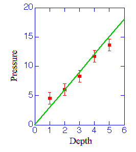

Note that this page was adapted from the University of Rochester's Page on Graphing and the Scientific Method.
Graphs play a crucial role in many discoveries in basic science. Graphs are used as a tool to observe correlations between various experimental parameters. The simplest correlation between two experimental parameters is the linear correlation. Suppose we design an experiment where we vary some measurable condition, like depth in a pond, and we measure the pressure as we drop a probe down into the water. We might get a series of measurements that look like:
|
 | ||||||||||||||
Obviously I have completely fabricated the data but the basic relationship is clear. The pressure depends linearly on depth. Even though some individual points may lie off the line we can see that the essential principal holds. With this new found knowledge we can make some predictions on how the pressure would continue to change as we go deeper. This is the whole reason for making these kinds of pictures.
Linear relationships aren't the only kind of correlation we can see. There are many kinds but the correlations that are most often seen in physics are the following: